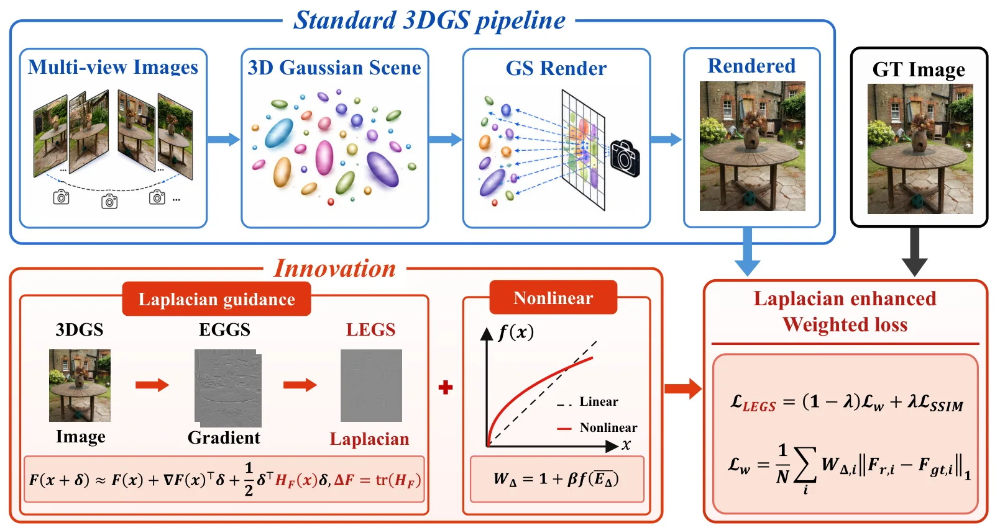
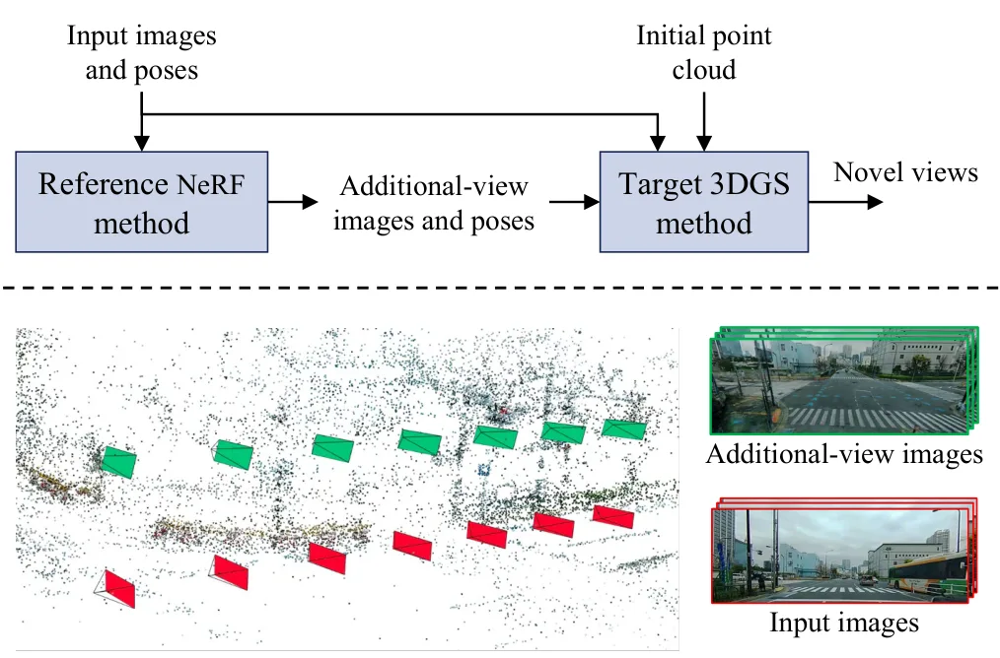
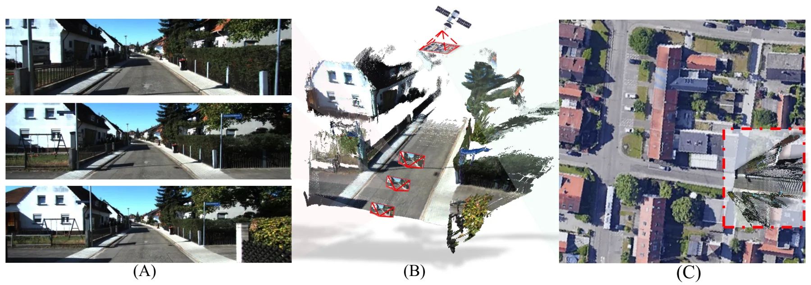
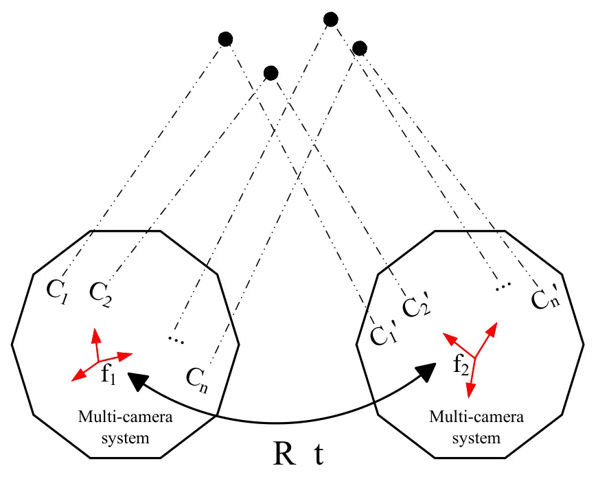
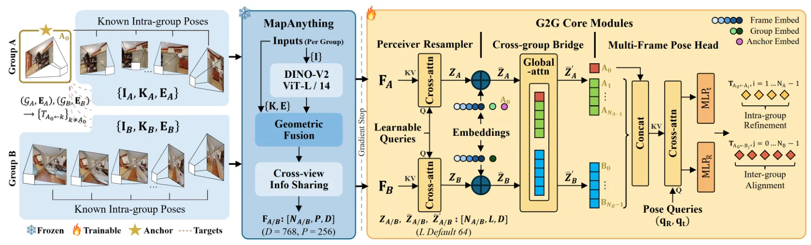
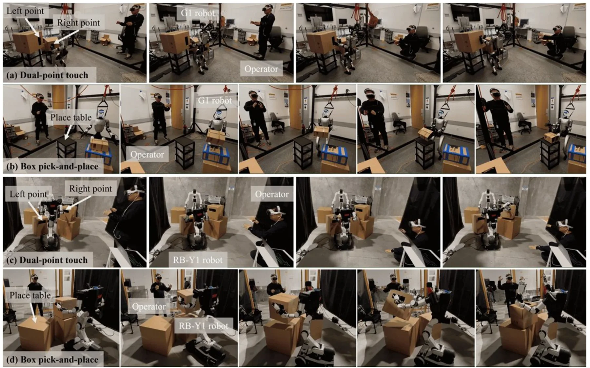

新论文 · 日期 2026-06-06 · score 17 · cs.CV, cs.GR, cs.MM, eess.IV
作者：Yongfei Guo, Qizhou Huo, Xuan Sun, Yuanhao Gong
评分 9.5/10
3DGS结构感知损失拉普拉斯边缘新视角合成地图细节优化
一句话工作总结：LEGS 用二阶 Laplacian 和非线性像素权重增强 3DGS loss，在不改渲染管线的情况下提升边缘与细节重建。
3D Gaussian Splatting（3DGS）已经成为高效显式辐射场重建与实时新视角合成表示，但标准 photometric loss 对平坦区域和结构丰富区域采用相同处理，可能限制锐利轮廓和细节恢复。Edge-Guided Gaussian Splatting（EGGS）通过边缘引导权重提升结构感知，但主要依赖一阶梯度响应与线性加权。LEGS 提出以二阶 Laplacian 结构响应替代一阶梯度引导，并把…
3D Gaussian Splatting (3DGS) has become an efficient explicit representation for radiance field reconstruction and real-time novel view synthesis. However, its standard photometric loss treats flat and structu…

新论文 · 日期 2026-06-08 · score 14 · cs.CV
作者：Mizuki Morikawa, Yuta Shimizu, Chunyu Li, Yusuke Monno
评分 8.9/10
街景重建3DGSNeRF 教师模型动态物体去除鸟瞰视角
一句话工作总结：该方法把高质量但较慢的街景 NeRF 当作 teacher，为快速 3DGS 提供去瞬态物体和鸟瞰补视角训练图像。
NeRF 与 3DGS 在新视角合成中具有互补特性：3DGS 渲染速度快，NeRF 通常渲染质量更高。本文面向街景场景，提出使用预训练的街景专用 NeRF 为目标 3DGS 生成训练图像。NeRF 渲染图像在 3DGS 训练中承担两类作用：替换含瞬态物体的街景输入视图，以继承 NeRF 对动态/瞬态干扰的清理能力；生成 bird's-eye views 作为附加视角，为 3DGS 提供更完整的几何与外观监督。作者还…
Neural radiance field (NeRF) and 3D Gaussian splatting (3DGS) are two mainstream approaches for novel view synthesis. They often show complementary performance, i.e., 3DGS demonstrating faster rendering speed…

新论文 · 日期 2026-06-06 · score 12 · cs.CV
作者：Xianghui Ze, Yongjian Luo, Mengjun Chao, Zhenbo Song
评分 9.1/10
度量尺度卫星影像前馈三维重建跨视角定位自动驾驶地图
一句话工作总结：该框架用卫星影像作为外部米级参考，解决前馈三维重建的尺度模糊，并同时改善几何与相机定位。
前馈式三维重建模型在不同场景上表现出较强泛化能力，但大多数只能恢复未知全局尺度下的几何，这限制了它们在需要度量环境理解的应用中的使用。现有 metric reconstruction 方法常依赖大规模度量标注或精确相机标定，成本高且在真实场景中不总是可靠。本文提出 satellite-guided framework，用易获得的卫星影像作为全局度量参考。给定粗略相机位姿后，方法检索局部 satellite patc…
Feed-forward 3D reconstruction models have recently shown strong generalization across diverse scenes, yet most of them recover geometry only up to an unknown global scale. This scale ambiguity limits their us…

新论文 · 日期 2026-06-08 · score 11 · cs.CV
作者：Tao Li, Zhenbao Yu, Banglei Guan, Jianli Han
评分 8.7/10
视觉惯性多相机系统相对位姿最小解RANSAC
一句话工作总结：论文提出利用 IMU 方向先验的 4 点多相机相对位姿最小解，可降低 VIO/VO RANSAC 前端的求解成本。
多相机系统相对位姿估计是自动驾驶、移动设备和 UAV 中的基础问题。既有方案通常计算复杂度高，或需要过多点对应，限制了真实系统中的 RANSAC 效率。本文基于新的参数化提出两个高效 minimal solvers：第一个使用 IMU 提供的竖直方向先验，第二个使用 IMU 提供的旋转轴方向先验。两种方法都只需要 4 个点对应，并把多相机相对位姿估计化简为求解一元 6 次多项式，相比常见 8 次多项式方案降低了复杂…
Estimating the relative poses of multi-camera systems is a fundamental problem in computer vision, with critical applications in autonomous vehicles, mobile devices, and unmanned aerial vehicles (UAVs). Howeve…

新论文 · 日期 2026-06-08 · score 10 · cs.CV
作者：Zhang Chen, Shuai Wan, Mengting Yu, Fuzheng Yang
评分 8.6/10
3DGS 剪枝地图压缩Hessian 近似免渲染评估端侧部署
一句话工作总结：REFINE 用解析 Hessian 近似和免渲染重要性评估加速 3DGS 剪枝，目标是大幅降低地图压缩成本。
现有 3DGS 剪枝方法常面临质量严重下降或计算开销过高的问题。REFINE 提出一个以 rendering-free primitive importance metric 为核心的高加速剪枝框架。该方法利用解析近似的 rendering-aware Hessian field 估计删除单个 primitive 所导致的期望感知误差；通过建模 visibility、projection geometry 和内容自…
Existing pruning methods for 3D Gaussian splatting (3DGS) suffer from either severe quality degradation or prohibitive computational overhead. In this paper, we propose REFINE, a highly accelerated 3DGS prunin…
新论文 · 日期 2026-06-08 · score 9 · cs.GR
作者：Hao Zhang, Ang Li, Boyan Du, Junke Zhu
评分 7.3/10
2DGS材质分解BRDF 调色板物理重光照数字孪生
一句话工作总结：MaterialClusterGS 用共享 BRDF 调色板和连续材料场约束 2DGS inverse rendering，让材质编辑和重光照更一致。
MaterialClusterGS 是一个面向 2D Gaussian Splatting 的调色板式材料分解框架，支持基于物理的 relighting 和 material editing。现有 Gaussian inverse rendering 方法通常为每个 primitive 独立分配 BRDF 参数，虽然灵活，但材料恢复高度欠约束：阴影、间接光照、几何误差和可见性残差可能被吸收到大量略有差异的局部材料估…
We present MaterialClusterGS, a palette-based material decomposition framework for 2D Gaussian Splatting that enables physically based relighting and material editing. Existing Gaussian inverse rendering metho…

新论文 · 日期 2026-06-07 · score 6 · cs.CV, cs.RO
作者：Yufei Wei, Shuhao Ye, Chenxiao Hu, Yiyuan Pan
评分 8.1/10
跨序列重定位多相机里程计相对位姿Foundation Model AdapterSim-to-real
一句话工作总结：G2G 冻结多视图 foundation model，用轻量跨组桥接模块显式估计两组图像的相对位姿。
恢复两组图像之间的相对 6-DoF 位姿是跨序列重定位和多相机 rig 里程计的基础。每个图像组通常携带来自视觉里程计或 rig 标定的已知组内几何，预训练多视图 backbone 也已能把这类几何融合进视觉特征；但当前模型常把所有视图当作无结构集合，缺少跨组推理。G2G 冻结 foundation model，仅增加三个轻量可训练模块：perceiver resampler、带 merged self-atten…
Recovering the relative 6-DoF pose between two image groups underlies cross-sequence relocalization and multi-camera rig odometry. Each group carries known intra-group geometry from visual odometry or rig cali…

新论文 · 日期 2026-06-06 · score 4 · cs.RO
作者：Jen-Wei Wang, Sarthak Kaingade, Andrea Tagliabue, Nicholas Morozovsky
评分 6.4/10
机器人遥操作MPC 重定向SLAM 全局反馈跨形态机器人数据采集
一句话工作总结：X-OP 用 MPC 把单 XR 设备操作者意图重定向到不同机器人，并用 SLAM 全局位姿反馈降低遥操作漂移。
全身遥操作对于 loco-manipulation 数据采集很重要，但外骨骼或多相机系统成本高、复杂且受环境限制。单 XR 设备加端到端 RL 的近期方法降低了门槛，却常需要针对每种机器人重新训练策略，且 motion retargeting 忽略动态可行性。X-OP 提出一个由单 XR 设备驱动的分层全身遥操作框架，可跨不同机器人形态泛化而无需机器人特定策略重训。核心是基于 MPC 的 motion retarg…
Whole-body teleoperation is essential for scalable robot data collection in loco-manipulation tasks, yet existing approaches relying on exoskeleton suits or multi-camera setups impose prohibitive cost, complex…